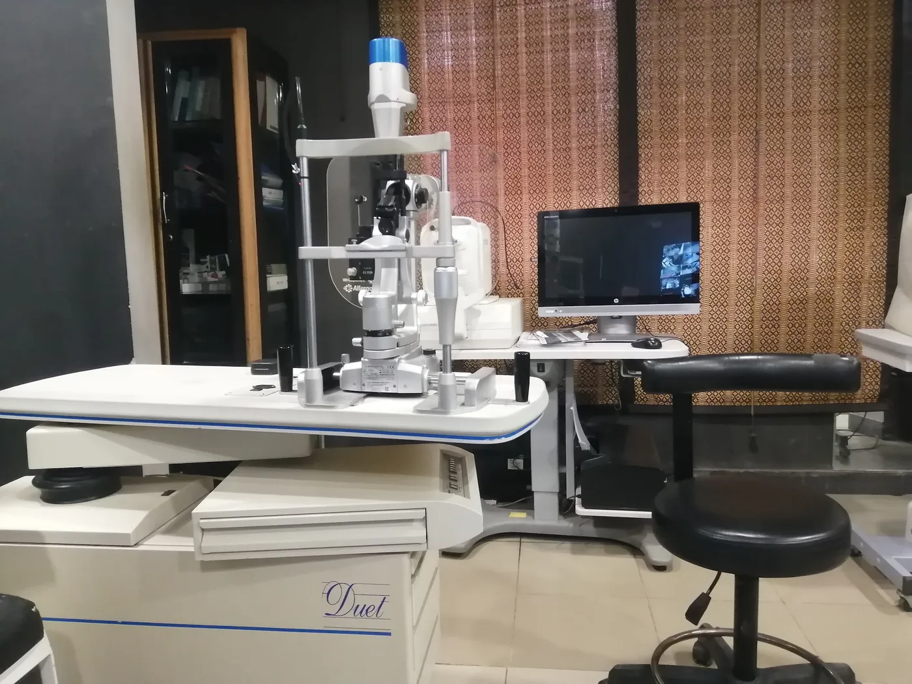

Better eyes for a better life
Cataract and laser surgery with Dr M. Majid Mahmood at Sahiwal Eye Care, Farid Town, Sahiwal.
Swipe to turn the eye. Scroll to look inside.
The cornea
The clear window at the front of the eye. Light comes in here first.
A cloudy lens
Behind the coloured iris sits a lens. When it clouds over with age, that is a cataract, and the world turns hazy.
Phaco surgery
Through a tiny opening, the cloudy lens is broken up with ultrasound and gently removed.
A clear new lens
A folded artificial lens opens inside the eye and takes the old lens's place.
Cataract surgery
Dr Majid is a phaco surgeon. Eye surgery is the treatment patients mention most in his Google reviews.
Laser treatment
Laser procedures for the eye, from a surgeon trained in both laser and phaco.
Eye pressure checks
High pressure inside the eye can harm sight without any pain. A quick check finds it early.
Detailed eye scans
Modern machines look at the inside of the eye in fine detail.
Eye tests for glasses
One patient wrote that their eyes were checked twice, on three kinds of machine.
Drag to turn the eye. Scroll to look inside.